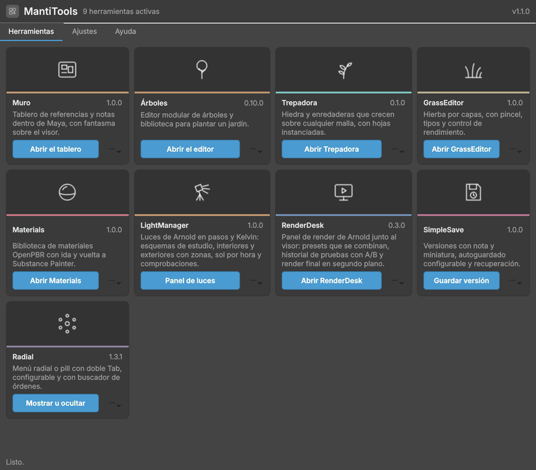
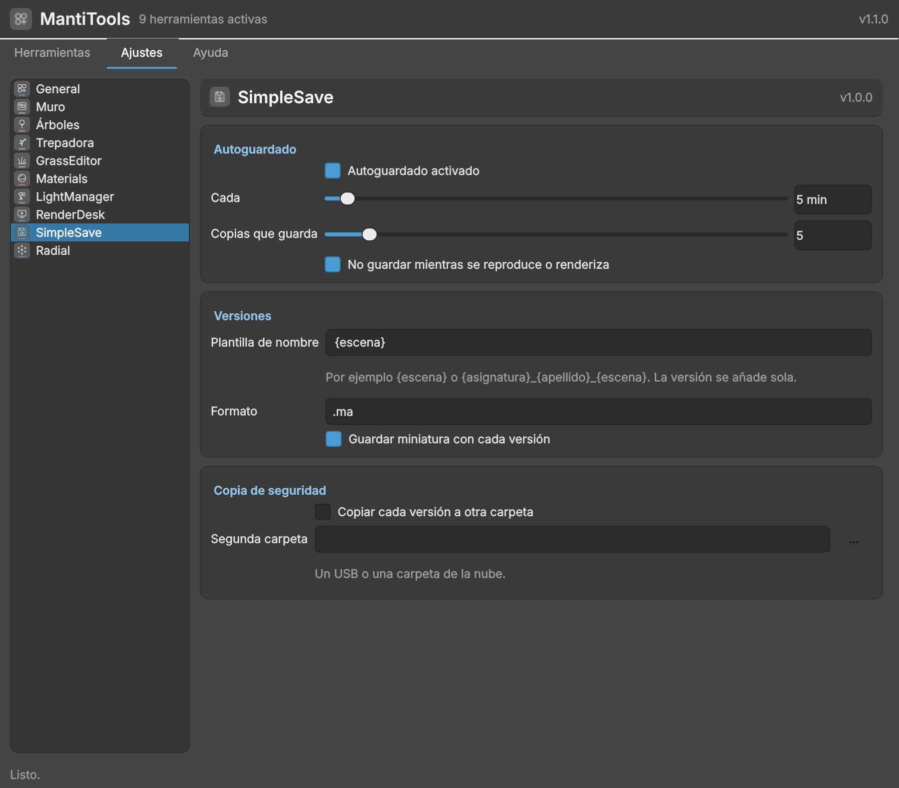

1. Encuentra el estante
Después de instalar, arriba en Maya aparece la pestaña de estante MantiTools. Cada icono gris es una herramienta. La raya de color de debajo la identifica, y las rayas verticales separan los grupos.
| Ratón | Qué hace |
|---|---|
| Clic en un icono | Abre la herramienta (o hace su orden principal: SimpleSave guarda versión, Radial muestra el menú) |
| Clic derecho en un icono | Sus órdenes rápidas: escenas de ejemplo, exportar, comprobar… |
| Dejar el ratón encima | Una nota con lo que hace el clic |
Los dos últimos iconos son del pack: el de cuadros abre la ventana central y el del libro abre esta wiki.
Consejo
¿No ves el estante? Menú MantiTools › Recrear estante.
2. Abre la ventana central
Haz clic en el icono de cuadros (o MantiTools › Herramientas…). Tiene tres pestañas:
- Herramientas: una tarjeta por herramienta. El botón azul la abre; «···» enseña las mismas órdenes rápidas que el clic derecho del estante.
- Ajustes: a la izquierda la lista de herramientas y a la derecha sus opciones. Los cambios se guardan solos.
- Ayuda: los primeros pasos, la documentación de cada herramienta y Comprobar instalación.

3. Prueba una herramienta en un minuto
Cada herramienta trae algo listo para probar desde el clic derecho de su icono:
| Herramienta | Prueba esto |
|---|---|
| Árboles | Clic derecho › Árbol de ejemplo |
| Trepadora | Clic derecho › Escena de prueba: ruina, y luego clic en el icono |
| GrassEditor | Clic derecho › Jardín de ejemplo |
| LightManager | Selecciona un objeto y clic derecho › Tres puntos en lo seleccionado |
| Radial | Con el ratón sobre el visor, pulsa Tab Tab rápido |
| Muro | Clic en el icono y arrastra una imagen al tablero |

4. Cambia un ajuste
En Ajustes, elige una herramienta en la lista y cambia lo que quieras. Por ejemplo:
- General › Idioma: español o inglés, para todas a la vez.
- SimpleSave › Autoguardado: cada cuántos minutos se hace una copia.
- Radial › Forma: anillo o pill.

5. Guarda tu primera versión
Pulsa el icono del disquete (o Ctrl+Alt+S; en Mac ⌘+Alt+S). Escribe una nota corta de lo que has hecho. Cada vez se crea un archivo nuevo, escena_v001.ma, escena_v002.ma…, y nunca se pisa uno anterior. Más en SimpleSave.
Siguiente paso
- El flujo de trabajo: un proyecto completo con todas las herramientas.
- Atajos y órdenes: todo lo que hace cada icono, en una tabla.